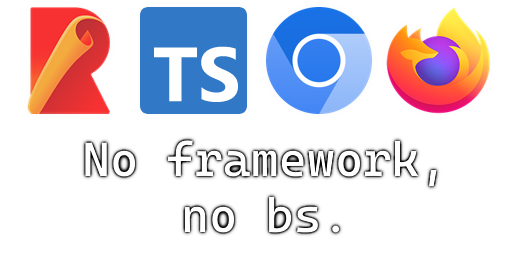

This is a base project for a Chrome/Firefox extension using Rollup and Typescript. This project is meant to be a starting point for new extentions looking to use Rollup and Typescript. This should be a good starting point for most projects. Although its still a bit scuffed.
